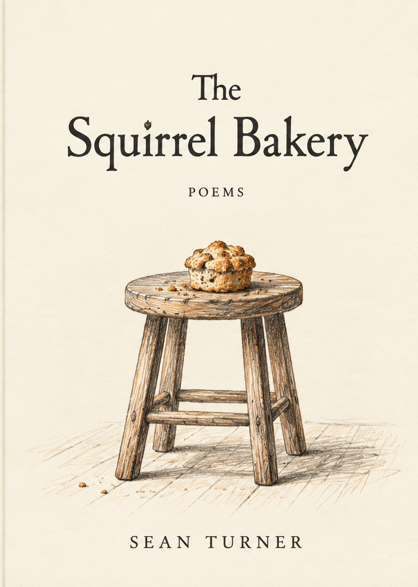
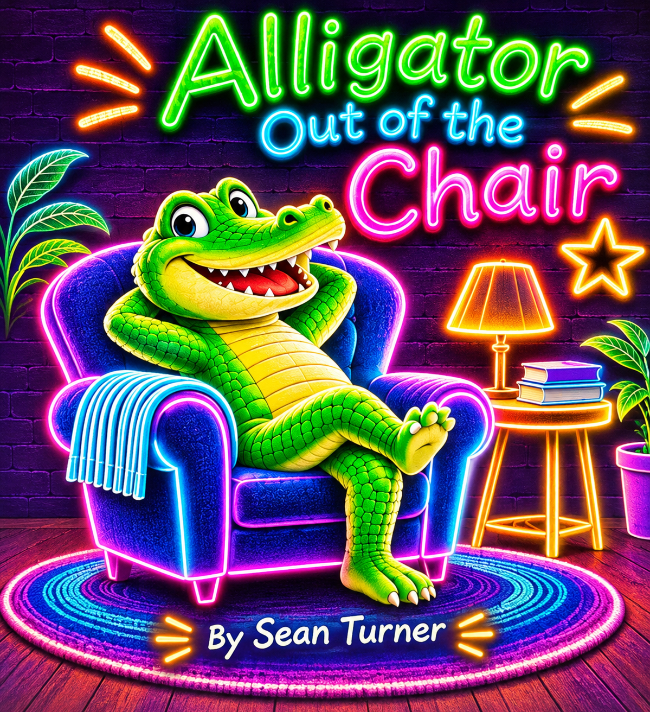

01 / Poems
The Squirrel Bakery
Poems about ordinary life and the wonderfully odd things hiding in plain sight. Family, friendship, small delights and the occasional squirrel.
By Sean TurnerA few books for curious minds. Some have poems. Some have teeth.

Poems about ordinary life and the wonderfully odd things hiding in plain sight. Family, friendship, small delights and the occasional squirrel.
By Sean Turner
A playful adventure in action words. First, though, there is an alligator in the chair.
Shapes, kindness and making room for someone a little different. Quills included.